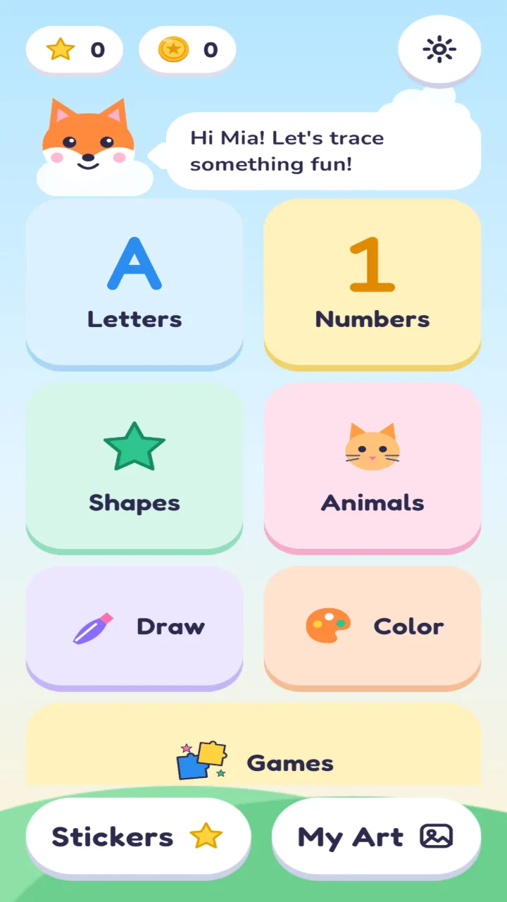
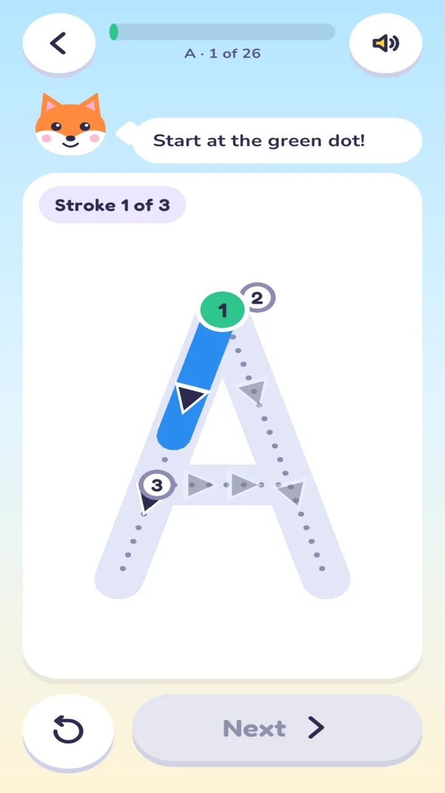
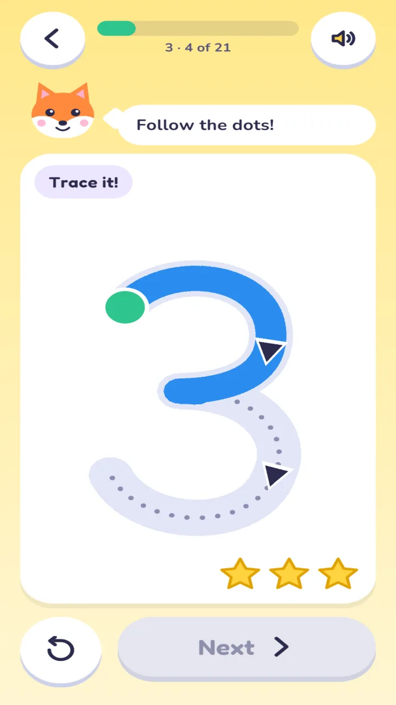
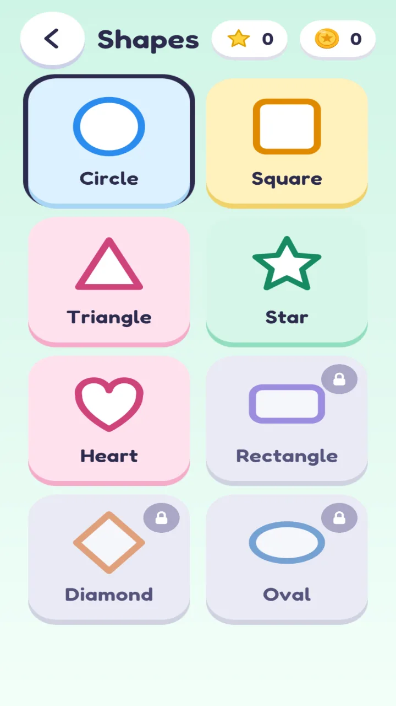
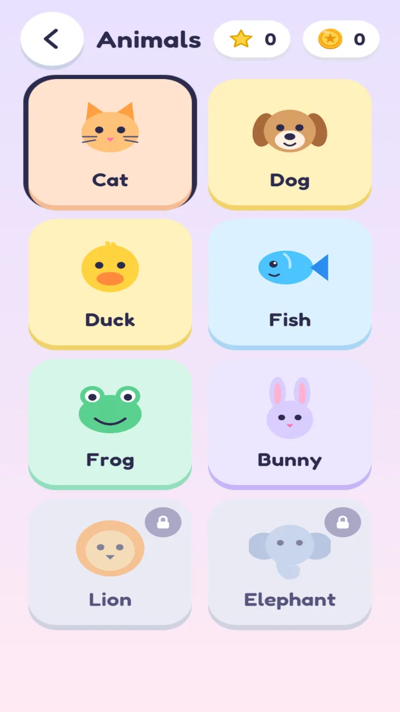
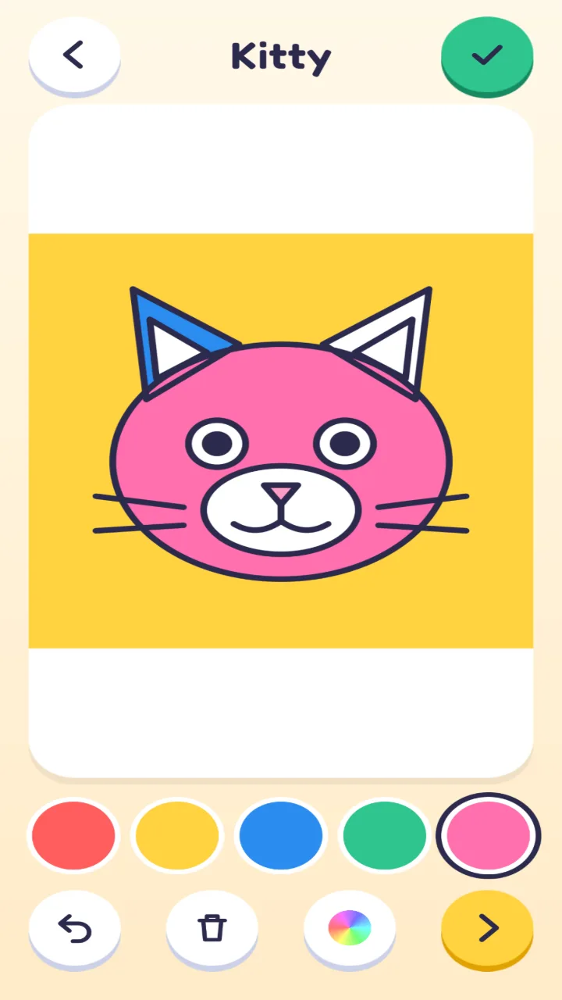
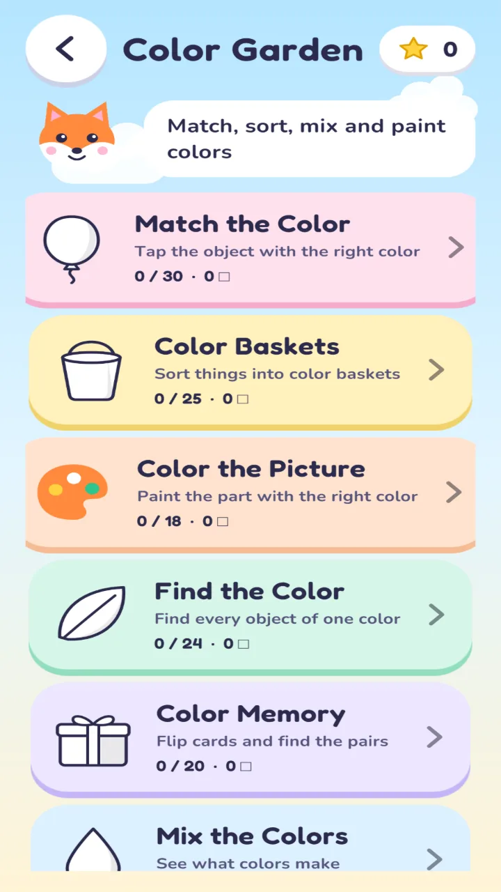

Home / Screenshots
Screenshots
These are real screens from the app, captured on a phone-shaped display.







Home / Screenshots
These are real screens from the app, captured on a phone-shaped display.






